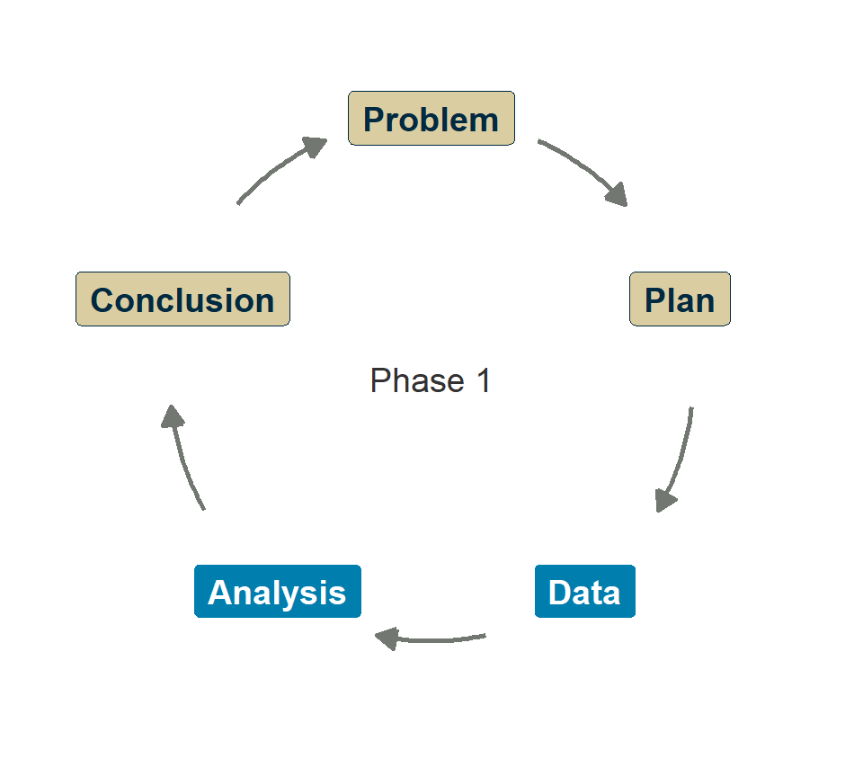
What do the numbers say?
Research Skills — Week 2
Today's exercises
Recap
11:05
Recap
- Summarizing data
- “Is that a big number?”
- Distributions
- Data visualization
- Spot the lie
- Your first ggplot
- Wrap-up
Where we are
11:05
Last week:
- What makes a testable question
- You met the biomass data and set up GitHub
This week: - How to summarize and visualize data - How to tell whether a number is big or small.
Questions?
11:05

Submit questions:
PollEv.com/geol
text geol to 07480 781235
Summarizing data
11:10
- Recap
Summarizing data
🎓 Concept block 1
- “Is that a big number?”
- Distributions
- Data visualization
- Spot the lie
- Your first ggplot
- Wrap-up
What are we trying to do?
11:10
Compress thousands of numbers into a few useful ones.
Three questions about any dataset:
- Where is the centre?
- How spread out is it?
- What shape is it?
Centre: mean vs median
11:13
Mean
The “balance point.”
Sensitive to extremes.
Pull one value way up → mean shifts.
Median
The middle value.
Robust to extremes.
Pull one value way up → median barely moves.
The Jacobite on Glenfinnan Viaduct: Eric Kilby, CC BY-SA 4.0
When do they differ? When the distribution is skewed.
Spread
11:17
- Range — max minus min
- Sensitive to one extreme value
- IQR — middle 50 % of the data
- Robust to outliers
- Standard deviation — the “typical” (root mean square) distance from the mean
- Median absolute deviation – the median distance from the median
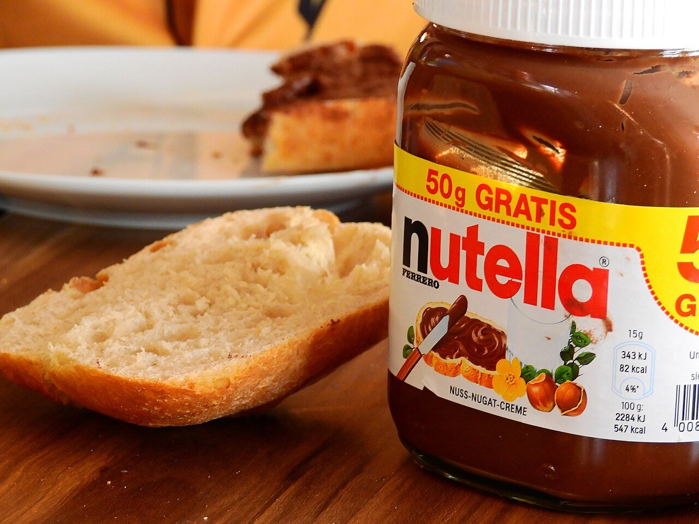
Another kind of spread: Bruno, Germany; CC0
Why spread matters
11:20
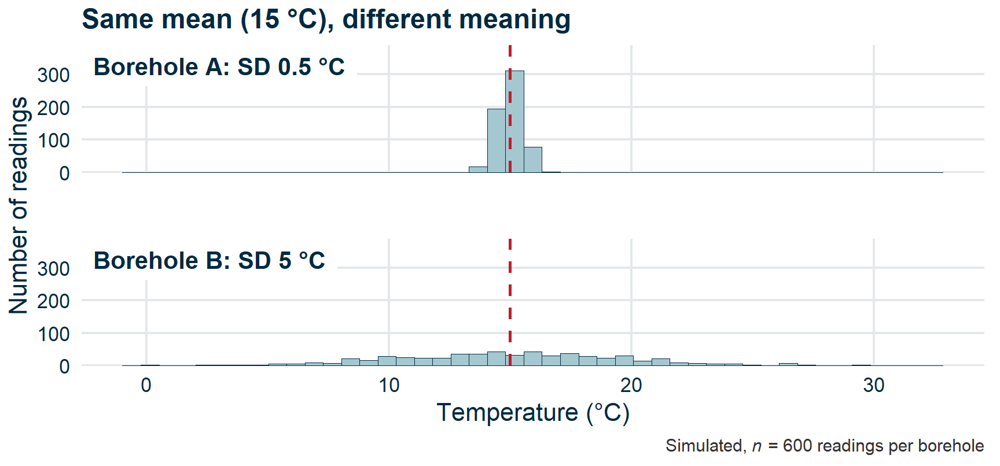
Shape
11:23
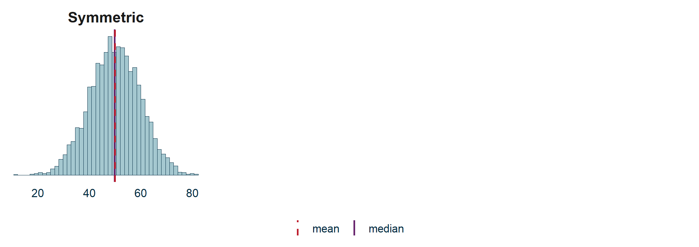
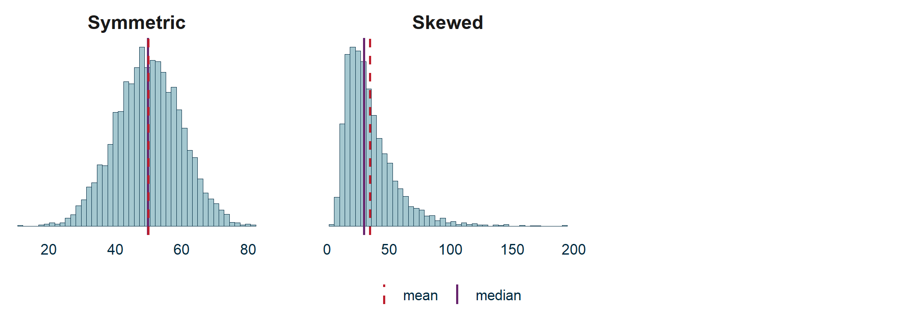
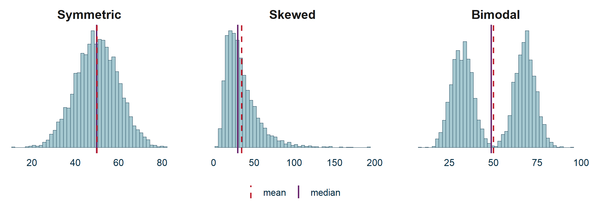
The two-humped problem
11:27
Bactrian camels: two humps, one valley. Pixabay Content License
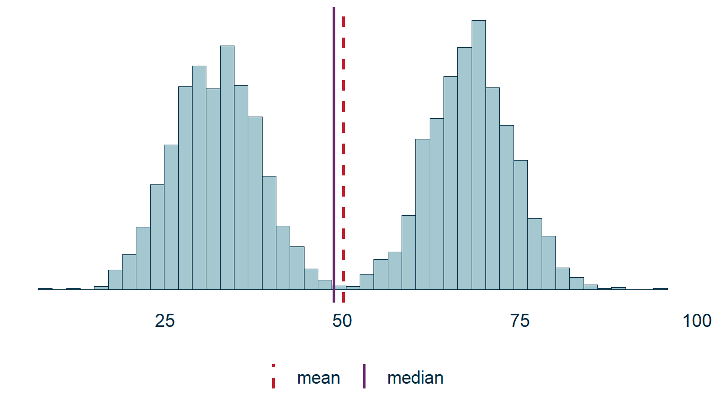
Always look at the distribution, not just the mean.
“Is that a big number?”
11:30
- Recap
- Summarizing data
“Is that a big number?”
💬✏️ Exercise 1
- Distributions
- Data visualization
- Spot the lie
- Your first ggplot
- Wrap-up
The More or Less principle
11:30
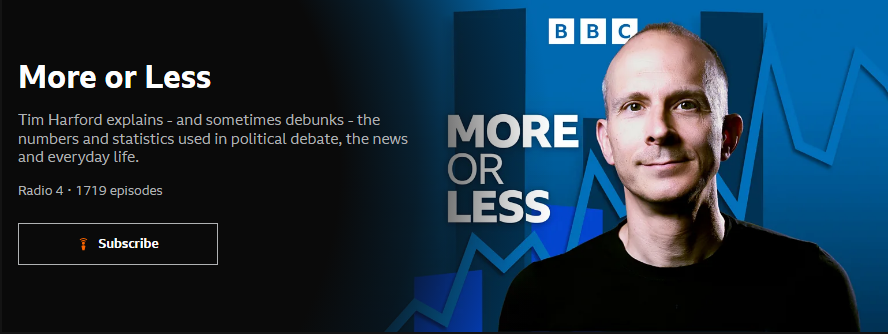
BBC Radio 4’s More or Less, presented by Tim Harford
© BBC; screenshot used for instruction
A number without a comparator is meaningless.
Is that a big number?
11:33
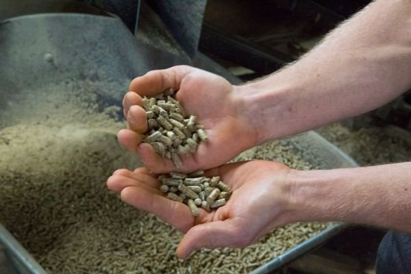
Wood pellets: US Forest Service, public domain
UK bioenergy electricity: 41 TWh/year.
Is that a big number? Compared to what?
Is that a big number?
11:36
Drax power station: © Drax
Drax power station emits 14 Mt CO₂/year.
Is that a big number? Compared to what?
Is that a big number?
11:39
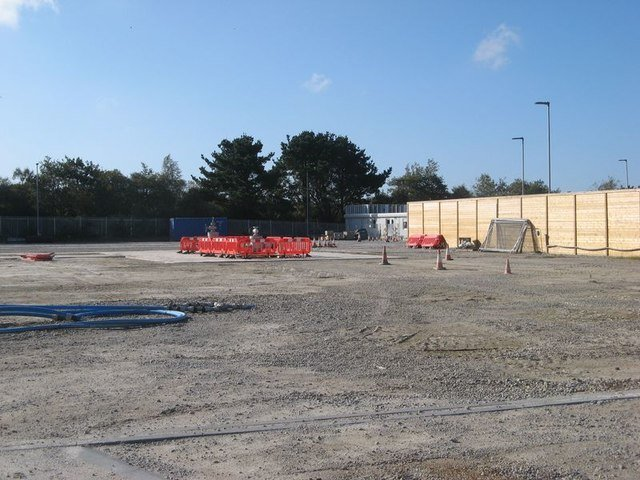
United Downs well pad, 2019, before the plant was built: Jonathan Wilkins / Geograph, CC BY-SA 2.0
The UK’s geothermal power station: 3 MW.
Is that a big number? Compared to what?
The habit
11:42
Every time you see a number in this module, ask:
“Is that a big number?”
And its companion: “Compared to what?”
Distributions
11:45
- Recap
- Summarizing data
- “Is that a big number?”
Distributions
🎓 Concept block 2
- Data visualization
- Spot the lie
- Your first ggplot
- Wrap-up
Why distributions matter
11:45
A histogram shows you what the mean and SD cannot:
- Is the data symmetric or skewed?
- Are there outliers?
- Is there more than one cluster?
The normal distribution
11:49
The original bell curves: Pexels License
Ring a bell? Arises when many small, independent effects combine.
Central Limit Theorem (informally): averages of large samples tend toward normal, even if the underlying data aren’t.
Allows many statistical tests to assume normality, and carry on working even when raw data are messy.
Log-normal distributions in geoscience
11:53
Shap Granite: jtweedie1976 / Flickr, CC BY 2.0
Many geological measurements are log-normal: a long tail of large values.
- Grain size
- Permeability
- Ore grades
- Trace-element concentrations
When data are log-normal, the mean can be very different from the typical value.
What that looks like
11:57
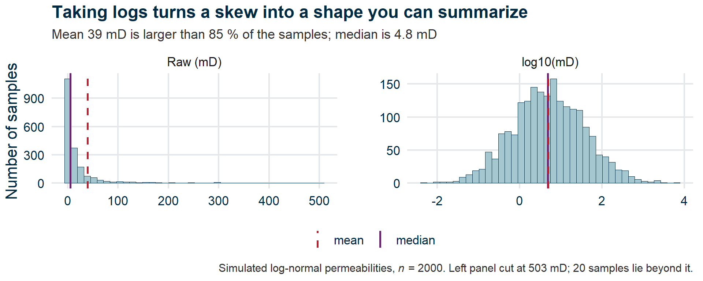
When to log-transform
12:01
If your data:
- Are positive (no zeros or negatives)
- Span several orders of magnitude
- Are right-skewed
Then log() often makes them more symmetric and easier to analyse.
Reach for log if you find yourself asking “how many times more”.
Leave it on the shelf when absolute (contra relative) differences are interesting.
Data visualization
12:05
- Recap
- Summarizing data
- “Is that a big number?”
- Distributions
Data visualization
🎓💻 Concept block 3
- Spot the lie
- Your first ggplot
- Wrap-up
What a good figure does
12:05
- Shows the data, not just a summary
- Explains the data: labelling axes, units, captions
- Facilitates comparison: simple shapes, consistent axes & scales
How a good figure works
12:07
The CRARP principles of graphic design:
- Contrast: Make the story stand out.
- Repetition: Consistent style between figures.
- Alignment: Same scale, same zero, no perspective.
- Repetition: Consistent style between figures.
- Proximity: Position your annotations; compare neighbours.
Bad figures
12:09
- Dodgy axes
- Cherry-picked data
- Missing labels or units
- Tricksy perspective
Dodgy plot #1
12:10
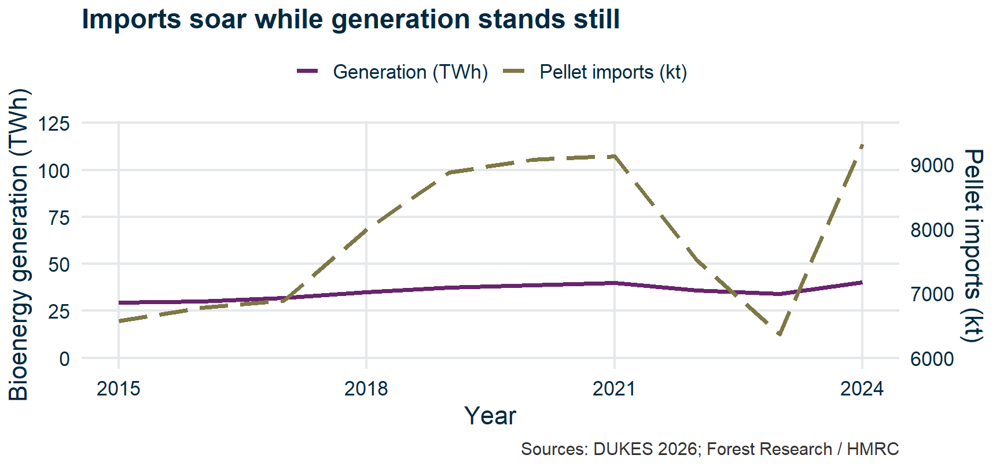
Shows the data Explains the data Facilitates comparison
The dual axis, fixed
12:12
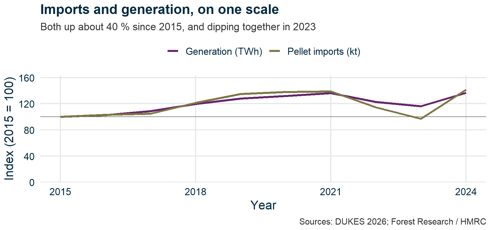
Contrast Repetition Alignment Proximity
Dodgy plot #2
12:14
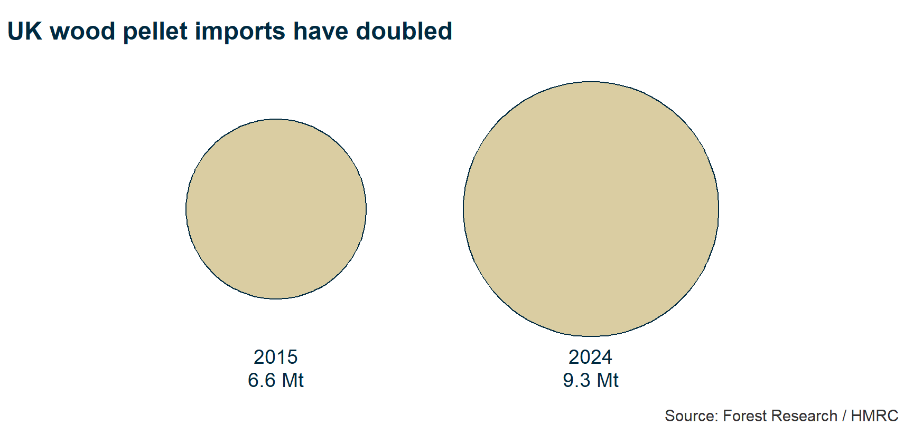
Shows the data Explains the data Facilitates comparison
The area encoding, fixed
12:16
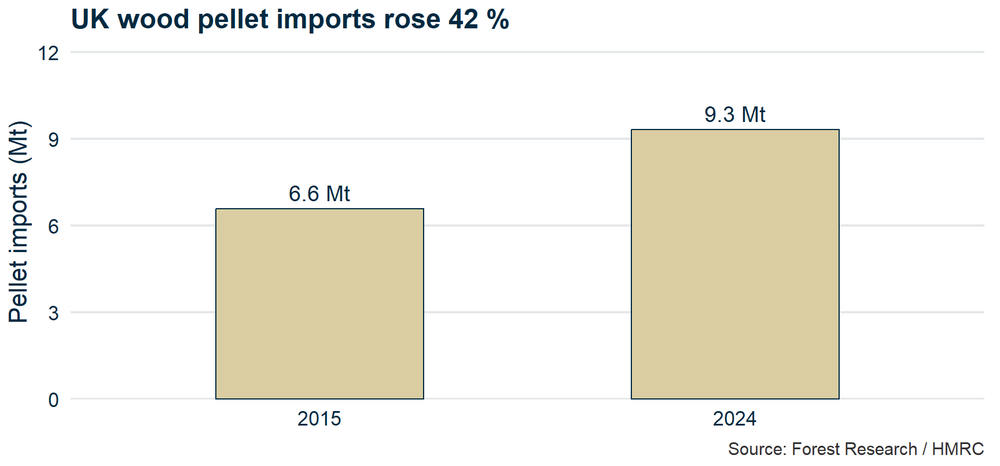
Contrast Repetition Alignment Proximity
Dodgy plot #3
12:18
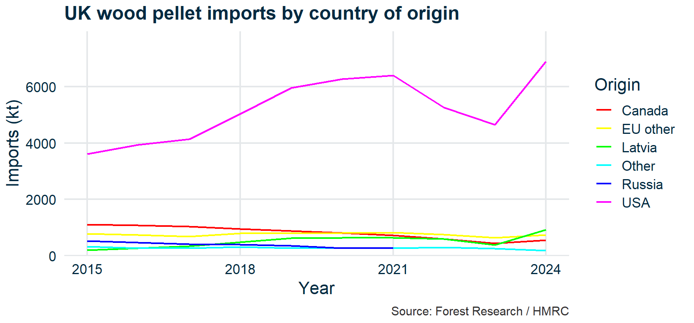
Shows the data Explains the data Facilitates comparison
Colour that reveals
12:20
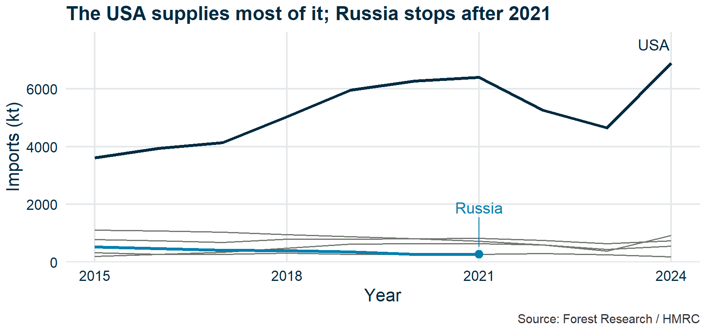
Contrast Repetition Alignment Proximity
Live demo: building a ggplot
12:21
The grammar of graphics
12:23
Data + Aesthetics + Geometries = a plot.
Data: A plot is just one way of displaying the data. Analyses don’t start with “I’d like to see a bar chart”, but with “What do these data tell me?”
Aesthetics: Translation layer: Which variable controls which visual channel? Channels: x, y, colour, plotting symbol…
Establishes the rules – doesn’t plot anything itself.
Geometries: What physical mark displays the visual channels?
Everything in ggplot2 follows this pattern.
Spot the lie
12:25
- Recap
- Summarizing data
- “Is that a big number?”
- Distributions
- Data visualization
Spot the lie
✏️ Exercise 2
- Your first ggplot
- Wrap-up
Instructions
12:25
Open Exercises → Week 2: Dodgy plots on the course site. Each box holds the code for one of the next three plots.
For each one: what simple fix will present the data honestly?
Make the fix in the code, run it, then move on to the next plot.
Dodgy plot #4
12:26
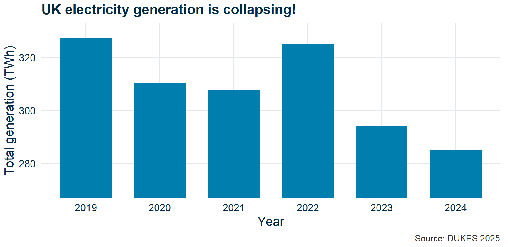
Shows the data Explains the data Facilitates comparison
Dodgy plot #4, fixed
12:28
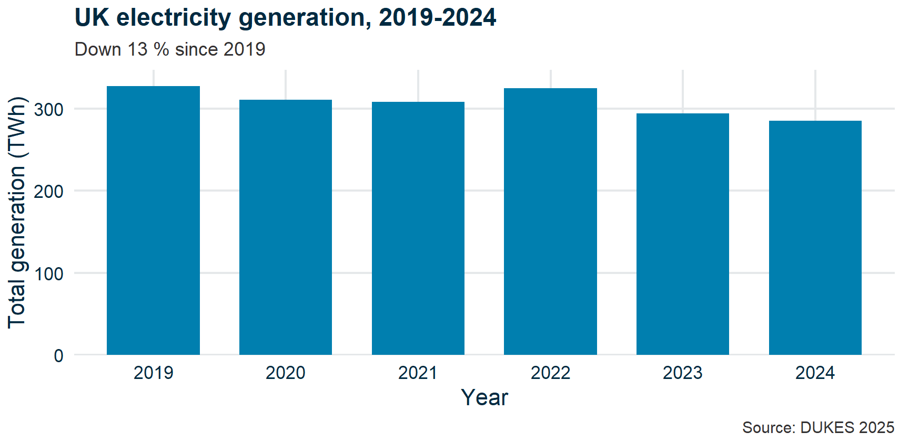
Contrast Repetition Alignment Proximity
Dodgy plot #5
12:29
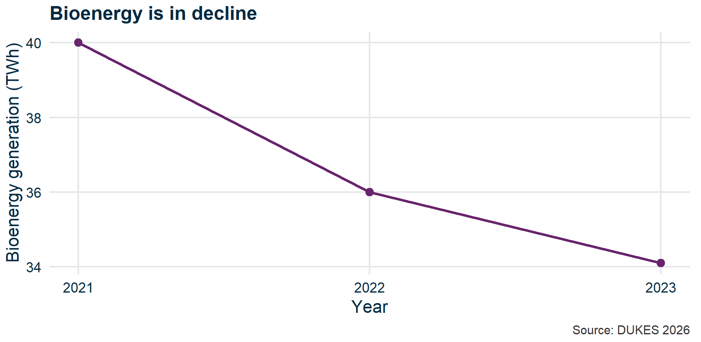
Shows the data Explains the data Facilitates comparison
Dodgy plot #5, fixed
12:30
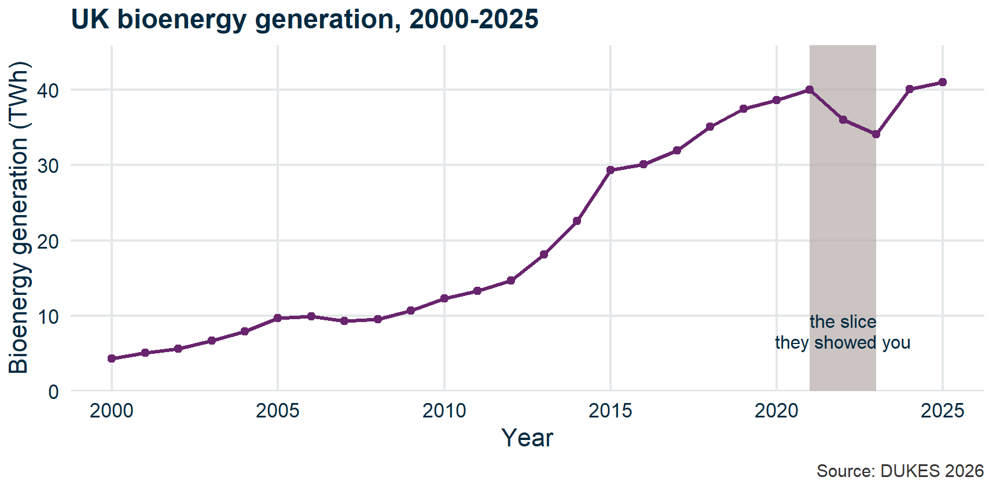
Contrast Repetition Alignment Proximity
Dodgy plot #6
12:31
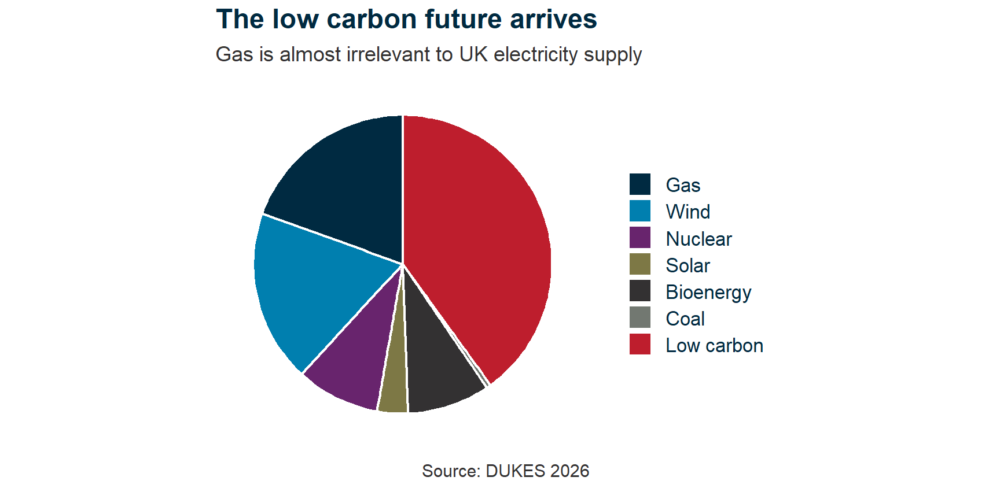
Shows the data Explains the data Facilitates comparison
Dodgy plot #6, fixed
12:33
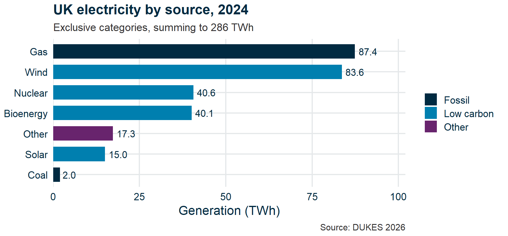
Contrast Repetition Alignment Proximity
Homework: audit some real charts
12:34

A big name, a shiny report – and some galling graphics!
Follow the link on Blackboard / under course site’s “Reference” menu.
- Pick a chart. Audit it on your own.
- Post your audit in Chart audit on the discussion board.
- Then read what everyone else wrote.
Your first ggplot
12:35
- Recap
- Summarizing data
- “Is that a big number?”
- Distributions
- Data visualization
- Spot the lie
Your first ggplot
✏️💻 Integrative exercise
- Wrap-up
Try it
12:35
Open the Week 2 content exercise page. Using the biomass data:
- Make a histogram of one variable
- Plot two fuels against year, with a legend
This is a check that you’re comfortable with ggplot2 syntax before the application session.
Attendance
12:35
Wrap-up
12:40
- Recap
- Summarizing data
- “Is that a big number?”
- Distributions
- Data visualization
- Spot the lie
- Your first ggplot
Wrap-up
Key points
12:40
- Always look at the distribution, not just the mean
- A number without a comparator is meaningless — “Is that a big number?”
- ggplot2: data + aesthetics + geometries
Exit ticket
12:40
UK bioenergy electricity output was 41 TWh in 2025. A classmate says: “That’s a lot — it must be making a real difference.”
What’s the most important question to ask first?
PollEv.com/geol
text geol to 07480 781235
Any questions we missed?
12:40
Submit questions:
PollEv.com/geol
text geol to 07480 781235
Next time
12:45
Application session: “Making the biomass case”
You’ll produce the figures that will go into your briefing.
Further reading
12:45
Optional, for anyone who wants to go further with figures:
- Claus Wilke, Fundamentals of Data Visualization — https://clauswilke.com/dataviz/. Start with Common pitfalls of color use.
- Kieran Healy, Data Visualization: A Practical Introduction — https://socviz.co/. Written around ggplot2.
- Cédric Scherer, “The evolution of a ggplot” — https://www.cedricscherer.com/2019/05/17/the-evolution-of-a-ggplot-ep.-1/. One default chart, polished step by step.
- Andrew Heiss, Data Visualization with R — https://datavizsp26.classes.andrewheiss.com/. A full course; its sessions on graphic design, mapping data to graphics, amounts and proportions, and themes follow on from today.